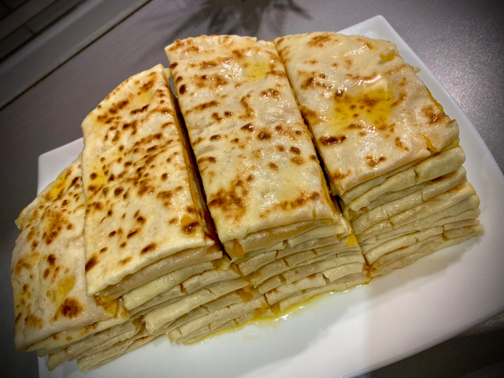

Ч1епалгаш

Описание
В национальной кухне многих народов имеются подобные лепешки со своими национальными особенностями приготовления и разными названиями.
Сегодня готовим хингалш - чеченские лепешки с тыквой. Отличаются они от азербайджанских кутабов тем, что замешиваются всегда на кефире и после приготовления "купаются" в кипятке. Знаю, что дагестанские чуду также опускают в кипяток после обжаривания, но чуду изначально круглой формы.
Хингалш можно приготовить со сладкой тыквенной начинкой, когда кроме сахара ничего больше к тыкве не добавляют. Но можно сделать начинку более пикантной и добавить в нее обжаренный лук, специи, немного соли.
Ингредиенты
- сыворотка молочная — 300 мл
- сода — на кончике ножа
- масло сливочное — 200 г
- мука пшеничная — 800 г
- соль — по вкусу
- тыква — 1000 г
- сахар — 60 г
Шаги
- Тыкву поставить варить (примерно на 40 минут). Готовность тыквы определяется по ее мягкости и ложкой вычистить мякоть тыквы.
- В миску с тыквой добавить пол чайной ложки соли, 3-4 столовые ложки сахара (по вкусу). И всю мякоть тыквы хорошо размять до однородной массы
- Приготовим топленое сливочное масло. Оно понадобится нам в завершении приготовления, для этого на очень тихий огонь поставить растапливаться
- Теперь займемся приготовлением теста. В отдельную миску залить воду, добавить пол чайной ложки соли, 1/3 чайную ложку соды, добавить муку.
- Высыпать муку горкой, ложкой выложить тесто и выложенное ложкой тесто обмять в муке, формируя круглишки.
- Из каждого круглишка на толстом слое муки раскатать максимально тонкий круглый пласт, лишнюю муку стряхнуть. На одну половину раскатанного круга теста выложить 2-3 ложки мякоти тыквы равномерным слоем распределить. Накрыть второй половиной. Чтобы края хингалш получились максимально ровными, можно маленьким блюдцем, обрезать лишние края теста.
- Разогреть сковороду и обжарить каждую сторону хингалш на сильном огне без масла. Жарить не долго, как только появятся золотистые крапинки. Готовые хингалш складывать на блюдо и держать накрытыми крышкой. В миску налить кипяток воды, каждый хингалш окунуть в воду и выкладывать на блюдо.
- 8И поочередно, каждый хингалш, обильно, равномерно смазывать топленым маслом. Нарезать на куски и горячими подать на стол.